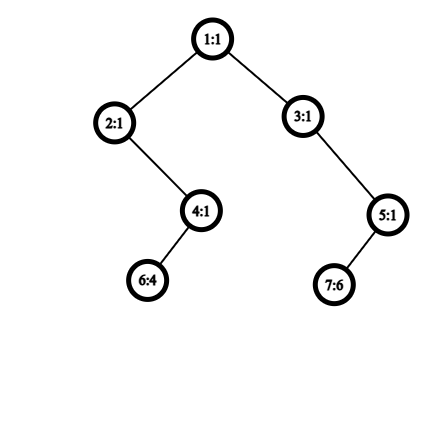
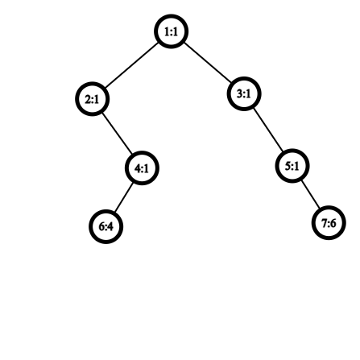

时间问题没做完，就这样吧。
假设南大的局域网中有N个主机节点，有M条已经搭建好的链路，每条链路直接连接两台主机；
为了更好实现这些主机节点的数据共享，校领导希望从任意一个节点发送的数据帧都能以最小的总链路代价W0 广播到所有其他节点；
同时校庆将至，校领导决定逐个更换或新建共K条链路，以进一步降低广播代价。但是他们并不知道第i+1条待更换或新修的链路是否能够真的降低目前的最小总链路代价Wi ，如果是，则开始更换或搭建，更新好后再考虑第i+2条链路，否则就放弃该条，直接考虑第i+2条链路；
现在校领导求助算法学的很好的你，你能帮助他们解答上述问题吗？
N个节点的节点标号依次为0~N-1；
每条链路用一个三元组(u,v,w)表示，其含义为节点u和节点v之间有一条代价为w的直接链路；
第1行依次为N,M,K，三者以一个空格间隔，末尾无空格
第2~M+1行逐行给出M条已经搭建好的链路三元组，每行分量之间以一个空格间隔，末尾无空格
第M+2~M+K+1行逐行给出K条待更换或新建的链路三元组，每行分量之间以一个空格间隔，末尾无空格
第1行输出原局域网中广播的最小链路代价W0
第2~K+1行逐行输出第i+1条待更换或新修的链路是否真的能够降低 Wi ，是则输出大写字母’Y’，否则输出大写字母’N’
第K+2行输出考虑完所有待更换或新修的链路之后的Wk
输入样例1：
1 2 3 4 5 6 7 8 9 10 11 12 13 14 15 16 17 18 19 5 5 4 0 1 4 0 2 3 0 3 4 0 4 5 2 4 6 2 3 2 2 4 7 0 4 4 1 3 4
输出样例1：
样例1解释：
原始的W0 = 16 → 节点2和3之间新修代价为2的链路后W1 = 14，因此搭建该链路，返回’Y’ → 节点2和4之间的原链路若从6更新为7，W2 = W1 = 14，因此放弃该链路，返回’N’ → 节点0和4之间原链路若从5更新为4，W3 = 13，因此搭建该链路，返回’Y’ → 节点1和3之间新修代价为4的链路后W4 = W3 = 13，因此放弃该链路，返回’N’ → 最终的W4 = 13
2 ≤ N ≤ 103
M ≥ N, K ≥ 1, 4(M+K) ≤ N2
所有链路代价w均为正整数，且任意链路代价w满足：1 ≤ w ≤ 100
要求：算法的时间复杂度不超过O(MlogN+KN)
1 2 3 4 5 6 7 8 9 10 11 12 13 14 15 16 17 18 19 20 21 22 23 24 25 26 27 28 29 30 31 32 33 34 35 36 37 38 39 40 41 42 43 44 45 46 47 48 49 50 51 52 53 54 55 56 57 58 59 60 61 62 63 64 65 66 67 68 69 70 71 72 73 74 75 76 77 78 79 80 81 82 83 84 85 86 87 88 89 90 91 92 93 94 95 96 97 98 99 100 101 102 103 104 105 106 107 108 109 110 111 112 113 114 115 116 117 118 119 120 121 122 123 124 125 126 127 128 129 130 131 132 133 134 135 136 137 138 139 140 141 142 143 144 #include <iostream> #include <vector> #include <algorithm> #include <numeric> #include <functional> using namespace std;struct UnionFind { vector<int > parent; vector<int > rank; int count; UnionFind (int n) { parent.resize (n); rank.resize (n, 0 ); count = n; iota (parent.begin (), parent.end (), 0 ); } int find (int x) if (parent[x] != x) { parent[x] = find (parent[x]); } return parent[x]; } void unite (int x, int y) int rootx = find (x); int rooty = find (y); if (rootx == rooty) return ; if (rank[rootx] < rank[rooty]) { swap (rootx, rooty); } parent[rooty] = rootx; if (rank[rootx] == rank[rooty]) rank[rootx]++; count--; } bool connected (int x, int y) return find (x) == find (y); } }; struct Link { int u; int v; int cost; Link (int u, int v, int cost): u (u), v (v), cost (cost) {} bool operator <(const Link& other) const { return cost < other.cost; } }; struct LAN { int N; int M; vector<Link> links; LAN (int N, int M): N (N), M (M) {} void addLink (int u, int v, int cost) links.emplace_back (u, v, cost); } pair<vector<Link>, int > findMST () { UnionFind uf (N) ; vector<Link> mst; int totalCost = 0 ; sort (links.begin (), links.end ()); for (const auto & link : links) { if (!uf.connected (link.u, link.v)) { uf.unite (link.u, link.v); mst.push_back (link); totalCost += link.cost; } if (uf.count == 1 ) break ; } links = mst; return {mst, totalCost}; } }; int main () int N, M, K; cin >> N >> M >> K; LAN lan (N, M) ; for (int i = 0 ; i < M; i++) { int u, v, w; cin >> u >> v >> w; lan.addLink (u, v, w); } vector<Link> mst; int W0; tie (mst, W0) = lan.findMST (); cout << W0 << endl; int Wi = W0; for (int i = 0 ; i < K; i++) { int u, v, w; cin >> u >> v >> w; lan.addLink (u, v, w); int Wi1; tie (mst, Wi1) = lan.findMST (); if (Wi1 < Wi) { cout<<"Y" <<endl; Wi = Wi1; } else { cout<<"N" <<endl; } } cout << Wi << endl; return 0 ; }
题目并不难，不需要课外算法。
本题比较容易被暴力水过，即使AC了也不一定代表时间复杂度是对的。AC掉的大佬可以试一试证明自己的做法的时间复杂度确实是对的，或者构造数据卡掉自己的做法。
邪恶的助教有一棵n个节点的二叉树，每个节点上都有一个正整数权值，保证1号节点为根。
设一个二叉树节点v是邪恶的，当且仅当v的左子树和右子树同构，且存在奇数对节点p,q满足：
p∈v的左子树, q∈v的右子树
p在v的左子树中的位置等于q在v的右子树中的位置
p的权值与q的权值不互质
对于如下的二叉树，编号为1的节点是邪恶的，因为节点6和节点7的权值不互质，且节点6和节点7的位置对应。

对于下面的两棵二叉树，节点1都不是邪恶的。第一张节点1的两个子树不同构，第二张图存在两对符合条件的点对（23和67）。

问二叉树中有多少个节点是邪恶的。
多组数据。
第一行一个正整数T，代表数据组数。
对于每组数据：
第一行一个正整数n，代表原二叉树的节点数量。
然后n行，第i行3个正整数leftsoni , rightsoni , valuei ，代表i号节点的左儿子，右儿子和权值，如果不存在左/右儿子，则用0表示。
T行，每行一个非负整数，代表T个答案。
1 2 3 4 5 6 7 8 9 10 11 12 13 14 15 16 17 18 19 20 21 22 23 24 25 input: 2 7 2 3 1 0 4 1 0 5 1 6 0 1 7 0 1 0 0 4 0 0 6 7 2 3 2 4 5 3 6 7 6 0 0 4 0 0 2 0 0 8 0 0 6 output: 1 3
解释：第一组数据，节点1是邪恶的；第二组数据，节点1,2,3是邪恶的。
1≤valuei ≤109
对于30%的数据:
1≤∑n≤1000
对于100%的数据：
1≤∑n≤105
a,b互质当且仅当gcd(a,b)=1，可以用辗转相除法计算两个数的gcd，时间复杂度为Θ(log(min(a,b)))。
code:
1 2 3 4 int gcd (int a,int b) if (b==0 )return a; return gcd (b,a%b); }
有兴趣的同学可以思考：若去掉左右子树必须同构的条件，其他条件不变，应该怎么做？
阿尼亚又双叒叕因为偷偷用了福杰的电报机发送摩斯电码暴露位置被抓起来了！
阿尼亚：哇库哇库
第一行两个整数n，m，分别表示点数和边数。
输出格式
样例输入1
1 2 3 4 5 6 7 8 7 7 1 3 1 4 3 7 4 7 5 6 6 5 3 4
样例输出1
样例输入2
1 2 3 4 5 6 7 8 9 7 8 1 3 1 4 3 7 4 7 5 6 6 5 3 4 4 3
样例输出2
数据范围6
可能有重边